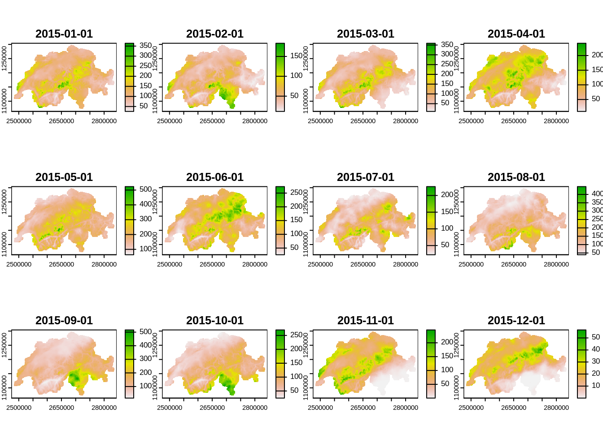
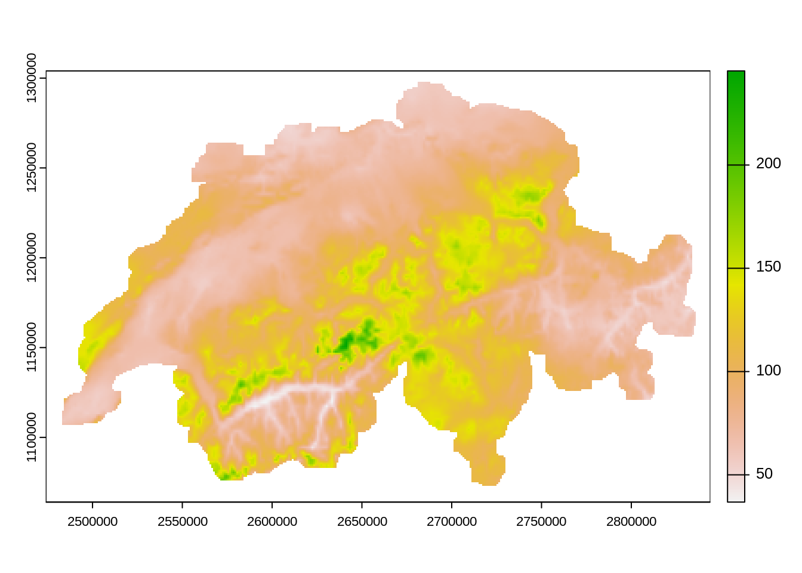
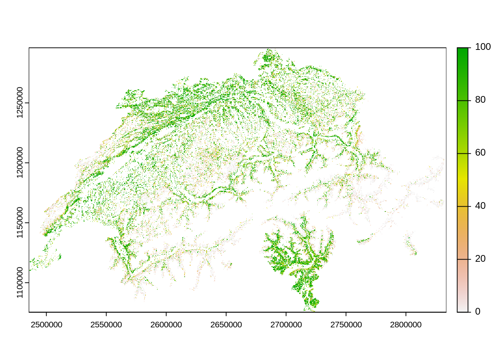

library("dplyr")
library("terra")
library("stringr")
library("purrr")
library("sf")
library("readr")2 Prepare covariates
2.1 Mask
Creating a raster to mask our results with (specifies resolution, extent and valid cell (no lakes))
| Dataset | swissBOUNDARIES3D |
|---|---|
| Description | Administrative boundaries |
| Source | Bundesamt für Landestopographie, swisstopo1 |
| Dataset | swissTLMRegio |
|---|---|
| Description | medium res., vector based landscape model |
| Source | Bundesamt für Landestopographie, swisstopo2 |
swisstlm_temp_path <- "data-temp/swissTLM/"
unzip("data-raw/public/swissTLM/swisstlmregio_2022_2056.gdb.zip", exdir = swisstlm_temp_path)
switzerland <- read_sf("data-raw/public/swissTLM/swissBOUNDARIES3D_1_4_LV95_LN02.gdb", "TLM_LANDESGEBIET") |>
st_zm() |>
filter(NAME != "Liechtenstein") |>
st_union() |>
st_transform(2056)
tlm_region_lake <- read_sf(file.path(swisstlm_temp_path, "swissTLMRegio_Produkt_LV95.gdb"), "TLMRegio_Lake")
tlm_region_lake <- tlm_region_lake[switzerland,,]
tlm_region_lake <- tlm_region_lake |>
slice_max(SHAPE_Area, n = 10)
mask_template <- rast(crs = "epsg:2056", resolution = 100, xmin = 2485000, xmax = 2834000, ymin = 1075000, ymax = 1296000)
switzerland_mask <- terra::rasterize(vect(switzerland), mask_template)
switzerland_mask <- mask(switzerland_mask, tlm_region_lake,inverse = TRUE)
mask_path <- "data-processed/Mask/"
if(!dir.exists(mask_path)) dir.create(mask_path, recursive = TRUE)
writeRaster(switzerland_mask, file.path(mask_path, "Mask.tif"), datatype = "INT1U", overwrite = TRUE)2.2 Population
| Dataset | Population |
|---|---|
| Description | Population count and denisity |
| Source | Bundesamt für Stastistik3 |
zips <- list.files("data-raw/public/Population/", full.names = TRUE)
zip_csvs <- sapply(zips, \(x){
df <- unzip(x, list = TRUE)
df$Name[str_detect(df$Name, "STATPOP\\d{4}.csv")]
})
# names(zip_csvs)
population_path <- "data-temp/Population"
if(!dir.exists(population_path)) dir.create(population_path)imap(zip_csvs, \(csv_i, zip_i){
unzip(zip_i, csv_i, exdir = population_path, junkpaths = TRUE)
}) |>
invisible()
pop_csvs <- list.files(population_path, "STATPOP", full.names = TRUE)
pop_csvs <- pop_csvs[as.integer(str_match(basename(pop_csvs), "\\d{4}"))>=2015]
population <- map(pop_csvs, \(x){
read_delim(x, col_select = c(E_KOORD, N_KOORD, matches("B\\d{2}BTOT"))) |>
rast()
}) |>
rast()
# add crs information
crs(population) <- "epsg:2056"
dates <- paste0("20",str_match(names(population), "B(\\d{2})BTOT")[,2],"-01-01") |>
as.Date()
time(population) <- dates
names(population) <- dates
population_path2 <- "data-processed/Population"
if(!dir.exists(population_path)) dir.create(population_path2)
writeRaster(population, file.path(population_path2, "Population_2015-2021.tif"))Error: [writeRaster] file exists. You can use 'overwrite=TRUE' to overwrite it2.3 Elevation
| Dataset | Elevation |
|---|---|
| Description | Digital Elevation Model (DEM) with 25m resolution |
| Source | Bundesamt für Landestopographie, swisstopo4 |
data preperation
dhm_path <- "data-temp/DHM/"
if(!dir.exists(dhm_path)) dir.create(dhm_path)
unzip("data-raw/public/DHM/DHM25_MM_ASCII_GRID.zip", exdir = dhm_path)
dhm25 <- rast(file.path(dhm_path, "ASCII_GRID_1part/dhm25_grid_raster.asc"))
# set CRS information
crs(dhm25) <- "epsg: 21781"# this takes a lot of time! I will provide the reprojected data as a download
dhm25_2056 <- project(dhm25, "epsg: 2056")
dhm_path2 <- "data-processed/DHM"
if(!dir.exists(dhm_path2)) dir.create(dhm_path2)
writeRaster(dhm25_2056, file.path(dhm_path2, "DHM25_2056.tif"))2.4 Weather
| Dataset | Elevation |
|---|---|
| Description | Different climate datasets (percipitation, sunshine, temperature…) |
| Source | Meteoswiss5 (not publicly available) |
Variables: - RhiresM: Monthly precipitation - SrelM: Monthly relative sunshine duration - TabsM: Monthly mean temperature
A full list of the available variables can be found here.
files_monthly <- c("RhiresM_61_21_ch01r.swiss.lv95.zip", "SrelM_71_21_ch01r.swiss.lv95.zip", "TabsM_61_21_ch01r.swiss.lv95.zip")
weather_path <- "data-temp/Weather"
if(!dir.exists(weather_path)) dir.create(weather_path)
unzip("data-raw/public/Wetter/Klimadaten_Feb22.zip", files = file.path("Klimadaten_Feb22", files_monthly), exdir = weather_path, junkpaths = TRUE)
weather_zips <- list.files(weather_path, pattern = "\\.zip$", full.names = TRUE)sapply(weather_zips, \(x){
nc_names <- unzip(x, list = TRUE)$Name
nc_select <- nc_names[as.integer(str_match(nc_names, "(\\d{4})\\d{8}")[,2]) >= 2015]
nc_select <- nc_select[!is.na(nc_select)]
exdir <- file.path(weather_path, str_match(basename(x), "([a-zA-Z]+)")[,2])
unzip(x, files = nc_select, exdir = exdir, junkpaths = TRUE)
})
file.remove(weather_zips)
weather_files <- list.files(weather_path, "\\.nc", recursive = TRUE, full.names = TRUE)weather_path2 <- "data-processed/Weather"
map(weather_files, \(file_i){
rast_i <- rast(file_i)
from_to <- str_match(file_i, "(\\d{8})\\d{4}_(\\d{8})\\d{4}")[,2:3] |>
as.Date(format = "%Y%m%d")
measurement <- str_match(basename(file_i), "^[a-zA-Z]+")[,1]
new_filepath <- file.path(weather_path2,measurement)
if(!dir.exists(new_filepath)) dir.create(new_filepath,recursive = TRUE)
new_filename <- paste0(paste(from_to, collapse = "_"), ".tif")
times <- seq(from_to[1], from_to[2], by = "month")
time(rast_i) <- times
crs(rast_i) <- "epsg:2056"
writeRaster(rast_i, file.path(new_filepath, new_filename), overwrite = TRUE)
})To import the dataset:
weather_files2 <- list.files(weather_path2, "\\.tif$", recursive = TRUE, full.names = TRUE)
rhires_2015 <- rast(weather_files2[1])
plot(rhires_2015)
# to get the mean over all months
mean(rhires_2015) |>
plot()
2.5 Forest mix
| Dataset | Forest Mix |
|---|---|
| Description | Percentage of “Laubbaumholz” (deciduous trees) in a 10m raster |
| Source | Bafu6 |
This dataset is also the basis of the dataset Forest Type which discriminates forest type into two classes based on the percentage of deciduous trees.
forest_mix_path <- "data-raw/public/Forest/Waldmischungsgrad_2018_10m_2056.tif"
forest_mix <- rast(forest_mix_path)
plot(forest_mix)
forest_mix_path2 <- "data-processed/Forest"
if(!dir.exists(forest_mix_path2)) dir.create(forest_mix_path2)
file.copy(forest_mix_path, file.path(forest_mix_path2, basename(forest_mix_path)), overwrite = TRUE)[1] TRUEbasename(forest_mix_path)[1] "Waldmischungsgrad_2018_10m_2056.tif"https://www.swisstopo.admin.ch/en/geodata/landscape/boundaries3d.html↩︎
https://www.swisstopo.admin.ch/en/geodata/landscape/tlmregio.htm↩︎
https://www.bfs.admin.ch/bfs/de/home/dienstleistungen/geostat/geodaten-bundesstatistik/gebaeude-wohnungen-haushalte-personen/bevoelkerung-haushalte-ab-2010.html: Scroll to the bottom and click on the “Geodata” Tab↩︎
https://www.swisstopo.admin.ch/en/geodata/height/dhm25.html↩︎
https://www.meteoschweiz.admin.ch/klima/klimawandel/entwicklung-temperatur-niederschlag-sonnenschein/monats-und-jahresgitterkarten.html↩︎
https://map.geo.admin.ch/?lang=de&topic=ech&bgLayer=ch.swisstopo.pixelkarte-farbe&layers=ch.bafu.landesforstinventar-waldmischungsgrad&layers_opacity=0.5&E=2649824.25&N=1226629.34&zoom=10↩︎